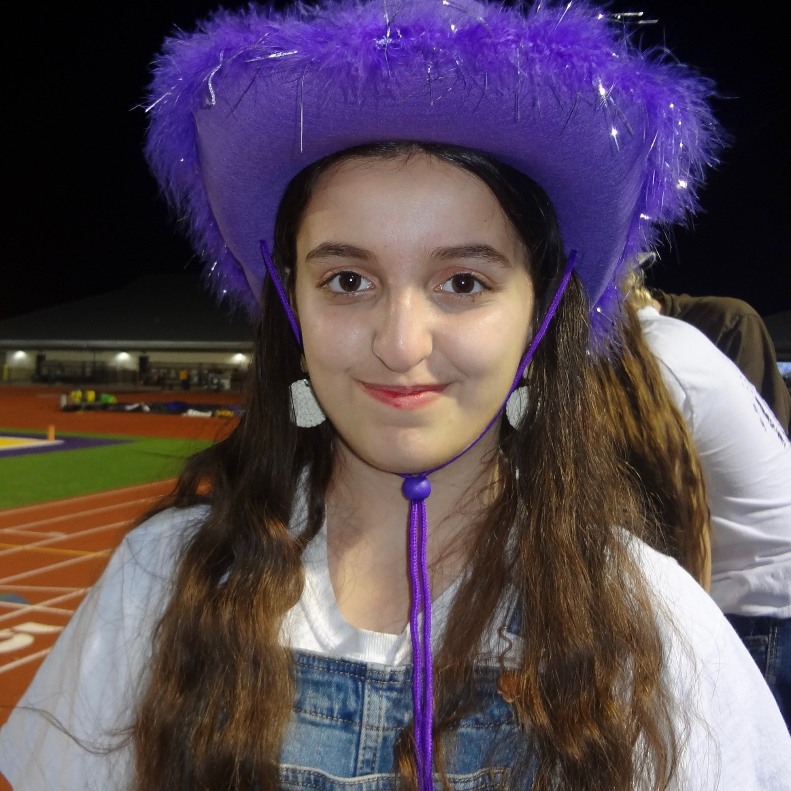

Why we built CHAMPs
We built Rice CHAMPs because we found it hard to get into volunteer positions where we could work with patients consistently, for an entire shift. Hospitals often give college volunteers tasks like running errands, restocking supplies, or staffing a front desk.
In our program, you spend your whole shift with patients: talking with them, playing with them, and being their support person during one of the hardest times of their lives.
Meet the team

Dr. Jon Flynn
Dr. Flynn oversees the Neuroscience department at Rice and also oversees other Rice student partnerships with Texas Medical Center institutions. As our faculty advisor, he is a committed mentor who helps us manage the club, its partnerships, and the classes associated with CHAMPs.

Aftab
I’m Aftab, the President of Rice CHAMPs and a sophomore at Rice studying Neuroscience and Transnational Asian Studies! I lead our organization and work with our board to create meaningful healthcare and service opportunities for our fellow Rice students. Beyond CHAMPs, I love to hang out with friends, lounge in my living room, eat biryani, play video games, and watch anime.

Prasanna
I’m Prasanna, the Internal Vice President of Rice CHAMPs and a sophomore at Rice studying neuroscience on a pre-med track. I manage membership, onboarding, and volunteer-hour tracking, and I coordinate our committees and officers so students can get hands-on experience around the Texas Medical Center. Outside of class, I follow FC Barcelona (Visca Barca), shoot sports video, and love photography, film, and music.

Qais
I’m Qais, the External Vice President of Rice CHAMPs and a sophomore at Rice University studying Neuroscience and Asian Studies. I manage building partnerships with external organizations and institutions on both Rice campus and in the TMC. I’m a big Chelsea and soccer fan, and if I’m not doing schoolwork or extracurriculars, you can find me side questing either at restaurants or cafes, watching TV shows or movies, or playing sports.

Leyana
I’m Leyana, the Marketing Head of Rice CHAMPs and a sophomore at Rice studying Neuroscience and Data Science on the pre-med track! I manage all of our club platforms, such as Owlnest, Instagram, and our website, alongside creating club and merch designs. I also make sure our listserv and Google Calendar are active and up-to-date at all times. Outside of CHAMPs, I love to dance, make arts and crafts, go to concerts, thrift, and visit new food spots with my friends!

Liana
I’m Liana, the Fundraising Lead of Rice CHAMPs and a sophomore at Rice University studying Neuroscience. I oversee our finances and ensure that we have the budget and resources needed for our organization and partners to succeed! In my free time, I enjoy playing music, binge watching a wide variety of K and C dramas, and exploring new coffee shops!